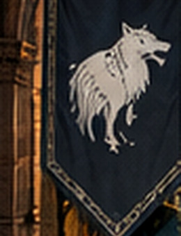
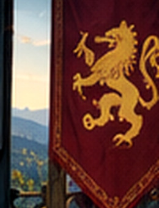
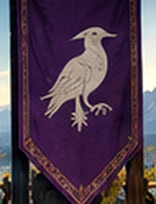
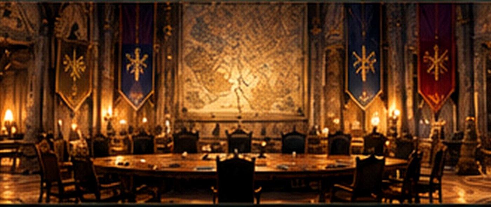
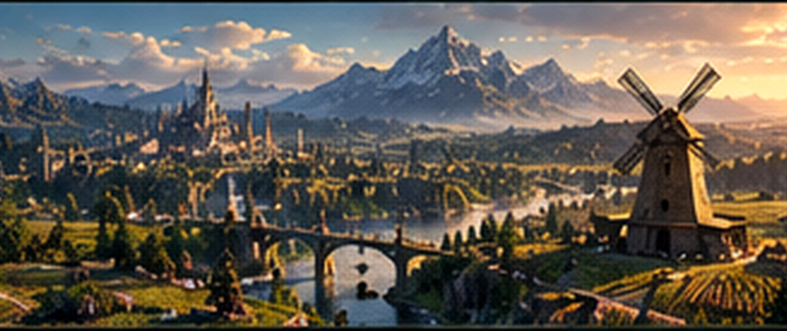

Let biomes lead
Use large natural biomes, ridgelines and rivers to give each territory a distinct character.

A HORIZONCRAFT MEGAPROJECT
A fresh beginning far beyond the familiar world. Independent houses, monumental builds and a civilisation shaped by the people who choose to build it.
01 / THE VISION
HorizonCraft already has established bases, impressive builds and farms for almost everything. This project is about stepping away from that comfort and creating something new from the ground up—while initially keeping access to the resources that help us get started.
The ambition is a connected medieval-fantasy region made up of distinct territories. Each house will have its own leader, land, identity and great castle, but the civilisation succeeds through collaboration rather than one ruler controlling everyone.
The guiding idea
Independent houses. Shared responsibilities. A council instead of a crown.
02 / THE MASTERPLAN
The exact location and boundaries are still open. The aim is to let the land shape the civilisation—not force the landscape to fit a rigid grid.

Use large natural biomes, ridgelines and rivers to give each territory a distinct character.
Choose commanding natural positions—hills, cliffs, mountains or river bends—rather than identical plots.
Neighbouring lands should connect with gates, roads and landmarks, avoiding huge empty buffer zones.
All map labels and boundaries are illustrative placeholders. They are not confirmed territory names, coordinates or final geography.
03 / THE GREAT HOUSES
Each house is led by a founding member and builds a great castle at the heart of its own territory.
Start with a small group of committed builders. If the project grows, new players can join existing houses rather than endlessly dividing the land.

Ancient stone, deep forests and a formidable mountain stronghold.

Dark masonry, stark silhouettes and a fortress built to command the skyline.

Gothic towers, mysterious halls and a distinctive palette of dark stone and violet.
House names are examples only. Founding members may help choose the final names, heraldry, histories and architectural themes.

04 / GOVERNANCE & ROLEPLAY
The civilisation is united by shared decisions, not a single monarch.
House leaders come together in a central capital to debate proposals, settle disputes and decide the future of shared projects. A monumental council chamber will become both a functional meeting place and a defining landmark.
Design principle
Every house has a voice. The details of how that voice is exercised remain open for the founding group to agree.
05 / SHARED INFRASTRUCTURE
The realm should be more than impressive castles. Shared systems will help every house thrive and keep the project sustainable.

A huge, organised bulk-storage facility where houses can deposit and withdraw large quantities of building materials. Inspired by public storage at HorizonCraft spawn, but on a much greater scale.

A coordinated set of farms to support a self-sufficient civilisation. Technical and industrial farms can be placed offshore or out of sight where that works best, rather than forced into the medieval landscape.
Connecting roads · Bridges · Border gates · Public gathering places · Shared construction projects
06 / DEVELOPMENT ROADMAP
A suggested sequence to give the project momentum without locking every detail before the founding members arrive.
Share the proposal, invite up to eight initial house leaders and agree on the project's guiding principles.
OUTCOME: FOUNDING GROUPCompare the 500,000 and 1,000,000 block options, assess biomes and terrain, then map the connected territories.
OUTCOME: AGREED LOCATION & MAPConfirm house identities, assign territory boundaries, select castle sites and agree the first council rules.
OUTCOME: TERRITORIES & BUILD PLANSStart the capital, council chamber, main roads, Grand Repository and priority communal farms.
OUTCOME: SHARED INFRASTRUCTUREDevelop house castles and settlements, introduce roleplay, and welcome future members into established houses as the community grows.
OUTCOME: A GROWING, LIVING REALMTHE FOUNDING EXPEDITION
This is an invitation to help create something lasting on HorizonCraft: a shared world of ambitious builds, distinct houses, collaborative projects and stories that develop as we play.
FOUNDING MEMBERS WILL HELP SHAPE THE FINAL PLAN.